It's been four years since DOLL EYE: CHAPTER ONE came out, and three years since the release of the Anniversary Update. That's crazy! To be completely honest with you, we were really hoping to have CHAPTER TWO out today. We even made an internal schedule to get us to that goal. Despite our best efforts, the game is not out today. What’s taking us so long, you ask? To keep it brief, we’ve spent a lot of time restructuring our team into a real, functioning business, we’ve had to redo a lot of work that we lost from members leaving the team, and we’ve had some health concerns. For these reasons, DOLL EYE: CHAPTER TWO has taken significantly longer to develop than we had originally hoped. It turns out that it's really hard to make a video game… Especially when you're relatively new to all of it. As always, we are grateful for your patience. We’re working hard to bring you a game worth playing.
In the four years of CHAPTER TWO’s development, we have been purposefully secretive with details about the game. We know how eager many fans are to know more, but our reluctance to share is for good reason. DOLL EYE: CHAPTER TWO has storylines and gameplay elements that are so far from what any fan could reasonably predict, and we fully believe the game will have a much greater impact if people go in relatively blind. With that said, we do have some things we can show you. (As always, everything we show is subject to change.)
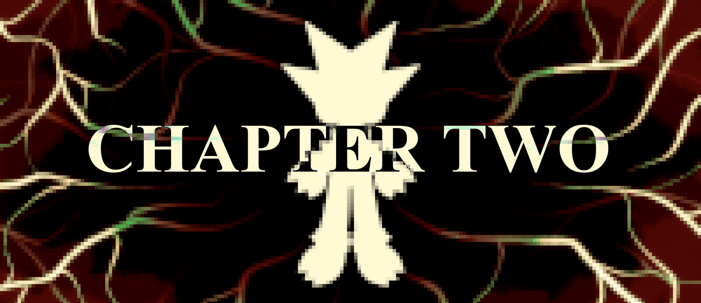
As I mentioned, we have had to replace some assets from previous team members that we can no longer use. One of those assets was Peter's theme. We are such huge fans of that song, and we were sad we had to let it (and the other songs containing that melody) go. But it did lead to the creation of a new theme for Peter, which you can listen to now:
" title="DOLL EYE: CHAPTER TWO - PETER'S THEME" frameborder="0" allow="accelerometer; autoplay; clipboard-write; encrypted-media; gyroscope; picture-in-picture; web-share" allowfullscreen>
(link for mobile)
I’m pretty happy with how that came out. Another song in a similar situation was the trailer theme for CHAPTER ONE, which became the title screen theme and defacto theme for the series, which obviously hurt to let go. After some trial and error, I came up with this:
" title="DOLL EYE: CHAPTER TWO - TITLE" frameborder="0" allow="accelerometer; autoplay; clipboard-write; encrypted-media; gyroscope; picture-in-picture; web-share" allowfullscreen>
(link for mobile)
Another track that I'm really happy with. Some fans may recognize the melody here.
Another consequence of the game taking as long as it has to finish is that Bones's art style and visual preferences have changed a bit over the three years since CHAPTER ONE was updated. That means a lot of the assets are being redrawn. Here are some talksprites:
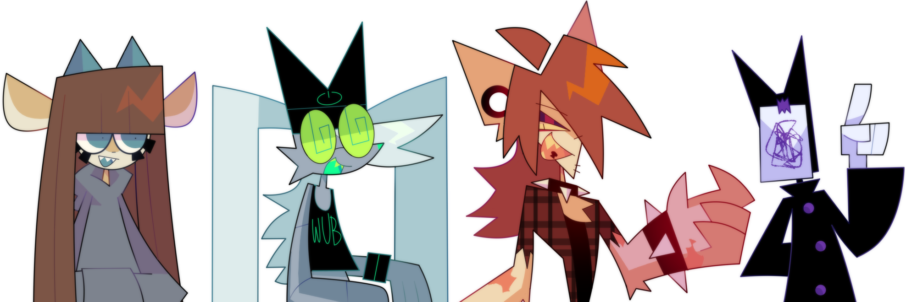
Here’s a look at Treelight, featuring all new pixel art and music:
" title="DOLL EYE CHAPTER TWO: DEV UPDATE #3" frameborder="0" allow="accelerometer; autoplay; clipboard-write; encrypted-media; gyroscope; picture-in-picture; web-share" allowfullscreen>
(link for mobile)
Here’s some more pixel art, from other areas in the game:
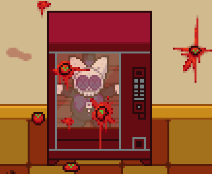
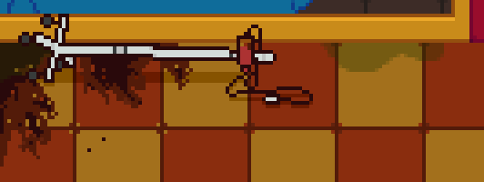
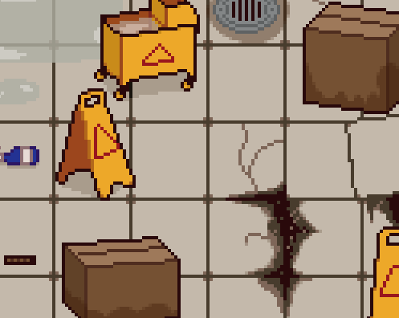
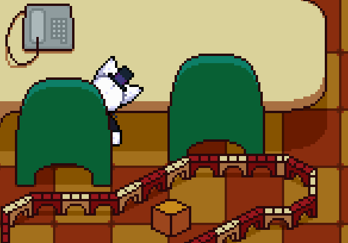
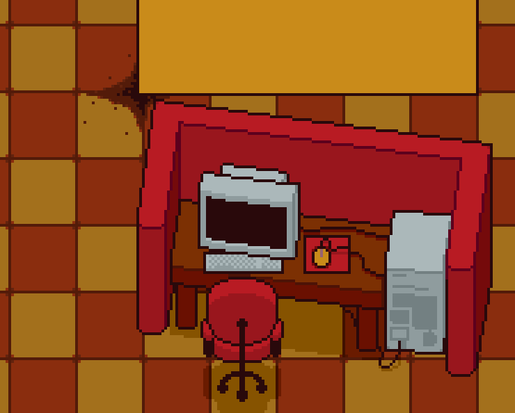
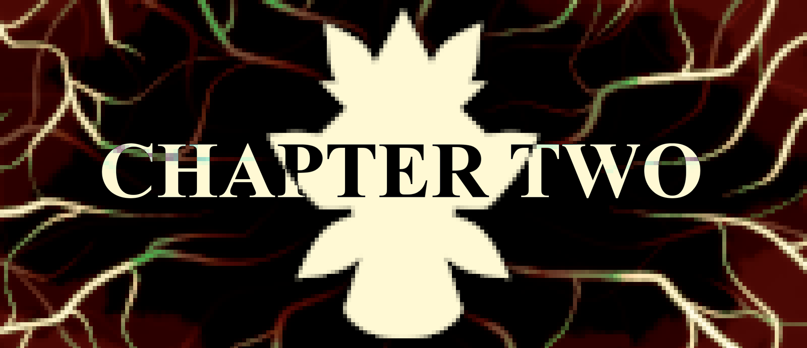
Q&A:
Q: What percentage of the game is done?
A: Conceptually, CHAPTER TWO is entirely laid out. All of the dialogue and story beats are written. We have rough guidelines for future chapters, as well. As far as assets and mechanics are concerned, we still have some work to do. The game is playable from beginning to end, with our current playtests taking about 2 and a half hours, but some segments are still rough works in progress. And of course, we know how all the puzzles and minigames work, so it’d take a new player longer. All in all, we’d say the game is about 70% done.
Q: Will there be puzzles?
A: Oh, yes. Many puzzles. CHAPTER TWO has much more involved and much more varied gameplay than CHAPTER ONE. We’re working hard to make sure nothing is too confusing or unfair.
Q: Will CHAPTER TWO have more horror elements than CHAPTER ONE?
A: Yes.
Q: How much will it cost?
A: In January 2022, we announced that while DOLL EYE: CHAPTER ONE will remain free to play, further installments in the series will be priced at $5 each. We chose this price thinking we’d make the whole $5 for each sale. Since then, we’ve learned that Steam takes a 30% cut from all game sales. CHAPTER TWO has also had a much longer and more involved development process than we had imagined. With this in mind, we are planning to release CHAPTER TWO and future chapters at $7 each. We hope you understand this decision.
Q: Will CHAPTER TWO have more voice acting than CHAPTER ONE?
A: Yes, to an extent. There are a couple fully voice acted and animated cutscenes.
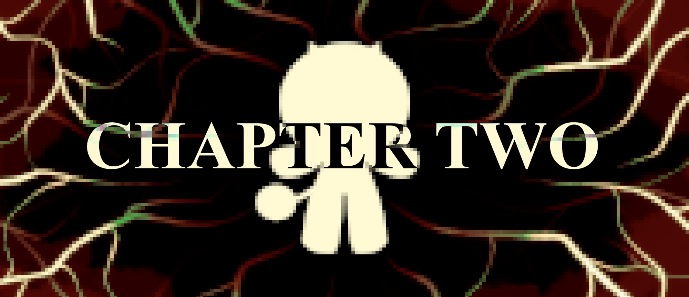
ONE LAST THING:
We have talked for years about the possibility of selling figurines of DOLL EYE characters. We are excited to announce that DREAMSTEED is opening its very own Etsy store! It is a blank slate for now, but you can expect official keychains, posters, and figurines to come in the future. Take a look at some of the concept art by KyomaAkuma:
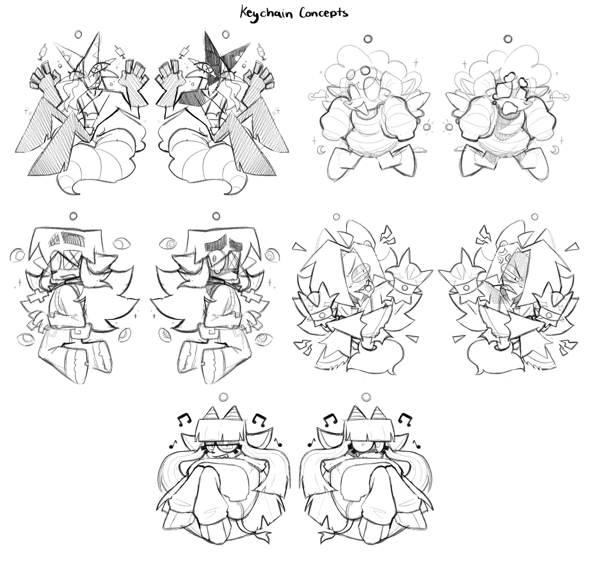
Thank you again for your patience with us as we make this game. We promise it will be worth the wait. Expect more updates in the future. Thank you for reading, and happy DOLL EYE day!
- fossfeen
10/30/23
HAPPY BIRTHDAY DOLL EYE (for the third time) AND HAPPY BIRTHDAY (1) TO THIS WEBSITE !!
A year ago we released the first teaser trailer for Doll Eye Chapter Two, and while we can't quite share the game itself yet, we can offer some trinkets you will be able to find inside of it:
Ever wonder what the full versions of the 3 little tracks in the teaser sound like? You don't, here they are anyways ^_^
Plentiful little characters to come in Chapter Two. Here's a pair of em:
MORE PIXEL ART !? You can bet on your entire ass. Doll Eye has never been pixeler:
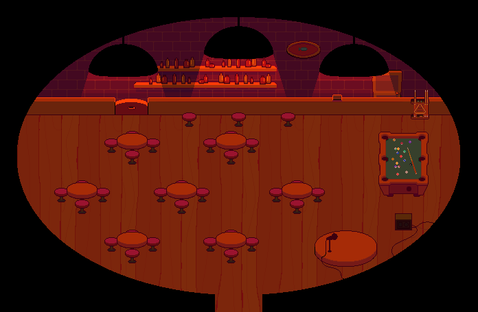
All trinkets showcased are subject to change. I don't know that you should get married to the trinkets, I wouldn't
Progress wise, the draft for the game is nearly done: just a few lines of major dialogue and we're done with that part as well ! Music is also almost all done. Once draft reaches completion, it's all cleanup AKA the easy part kinda For me
And lastly, it's no Chapter Two, but since you and I are already here: the Steam release of Chapter One is currently under review, and a trailer Should be out somewhere in November if all goes well (PLEASE) ! No huge changes in the game itself, but the experience is definitely improved with this port to RPG Maker MZ. And also? Achievements. Achievements So Fun !!!!!!!
Thank you so, so, SO much to everyone who has bought a Kao plush!!! We reached our goal of selling 200 plushies, and have received a two-week extension for the campaign. Since then, we have sold over a hundred more!!! Your contributions will do wonders in allowing us to continue working on Doll Eye. And as a bonus, you get a cute little guy out of it, too!
At the time of writing, the Kao Ushi plush is only available for another six days, so get one while you can!
MugsyMayhymn and I – voice actors of Kao and Mystery, respectively – are offering free voice requests to anyone who sends us proof of purchase of a plushie. To get yours, please message @mugsymayhymn and/or @fossfeen on Discord.
Doll Eye Chapter One’s Steam release is in its final stages. Our programmer, Jorge, has put in a lot of work to port the entire game to a newer version of RPG Maker. This change has allowed us to make several tweaks and optimizations. The release will have working builds for Windows, Mac, and Linux. The only thing keeping us from releasing it at this point is some backend business stuff. As previously stated, it will be available for free. There will be an announcement here at the time of the game’s release.
By far, the majority of our development time over the past few months has been spent working on Chapter Two. (And even a little bit on Chapter Three, if you’d believe it.) There is so much that we cannot wait to share with you. The game is really shaping up to be something incredible.
In our last update, we shared a look at Alfred’s new walksprites. Since then, they have received even more polish – mostly from the talented hands of @ichigogoooooooo on Twitter and a new member of Dreamsteed, @deceseze on Instagram! Take a look (WIP!):
We’d also like to share some new (WIP!) walksprites for Peter, Shai, and a new character in Chapter Two:
I know that some will be disappointed with the small amount of content in these updates. We are probably more excited for you to see what we have been working on than you are. Please believe me when I say that this chapter will be worth the wait. There is still no expected release date, but we are closer than ever to getting the game out. Even without much of the gameplay implemented, in its current state, the game has over two hours of content.
Happy new year, everyone! We’re excited for everything to come in 2023. Here’s a small update for now.
First, an announcement regarding future installments of Doll Eye:
While Chapter One will remain free, Doll Eye will be put behind a paywall from the second chapter onward. There are quite a few reasons for us to do this. The biggest one is that it turns out that making such a large project for free isn’t exactly sustainable. The funds from the various plushie sales have helped tremendously, but we figure it’s only fair to charge for a product with so much time and energy put into it.
We plan for each future chapter to be available for around $5 on Steam. For all the members of our fanbase this decision alienates, we apologize. There will still be playthroughs you can watch on YouTube, we are sure! With the increase in quality the Doll Eye series is seeing, we feel $5 is a very reasonable price. We are already in the process of bringing Chapter One to Steam, which, again, will be free, and you will see an update here when that happens!
We've also tossed around the idea of bringing Doll Eye to the Nintendo Switch, but that’s something for future us to worry about. Our sights are set on finishing Chapter Two before we tackle something like that. We won’t guarantee a Switch port is happening, but we know it’s possible.
With all that said, we’ll conclude this update with a video showcasing Alfred’s new walksprites and an area from the beginning of Chapter Two! We’re pretty proud of how these look. Of course, everything shown here is a work in progress and is subject to change.
(Taps mic) Oh, god... is this thing on? Am I doing this right? ... Whatever, we're just some indie youngsters in a Discord server. Let's not take ourselves too seriously.
We asked ourselves how far along we think Chapter Two is, and we'd say it’s about... (drumroll, please)
40% done.
"40%!? After TWO whole years since Chapter One came out?"
Ok, ok, ok. Hear us out. It's gonna be a lot faster from here on – a lot of our time has been spent conceptualizing the whole game! We’ve written a whopping 107 pages of character bios, chapter outlines, storyboards, and other reference material for development. Various big projects like the Chapter One Anniversary Update, the Dr. Mystery plush campaign, The Dark Symphony, the website you're looking at right now, and more have been taking up big chunks of our time.
School, work, mental health... Life can dry us up like raisins, but things seem to be heading towards a better path! :-D
For example... the money we raised from the plush campaign (THANK YOU SO MUCH TO EVERYONE WHO BOUGHT ONE) has allowed us to hire an awesome background artist AND a programmer that actually knows how to code! Alright, what else... Uhhhh... the full outline for Chapter Two is already done! We have a bunch of dialogue, art, music, and roughly 20 minutes of gameplay coded in, a lot of new character designs (you don't even KNOW dude) and soooooooo much concept art. And hey, check out this new teaser video!
We're pretty positive that development is gonna be a lot faster from here on, especially once our co-director finishes up with college.
So, yeah! We want this game to be done just as badly as you do (probably even more), but unfortunately there's still time that we're all gonna have to wait out. We're no fans of promises, but something that we can promise is this: we haven't been slacking! This project is kind of the main focus of our (director and co-director) lives, and we're doing our best to make space in our personal lives to work on it as much as we can!
We appreciate your continued interest in the project, and we thank you for reading this update. This website is where you will find development updates about Chapter Two and other DREAMSTEED projects in the future.